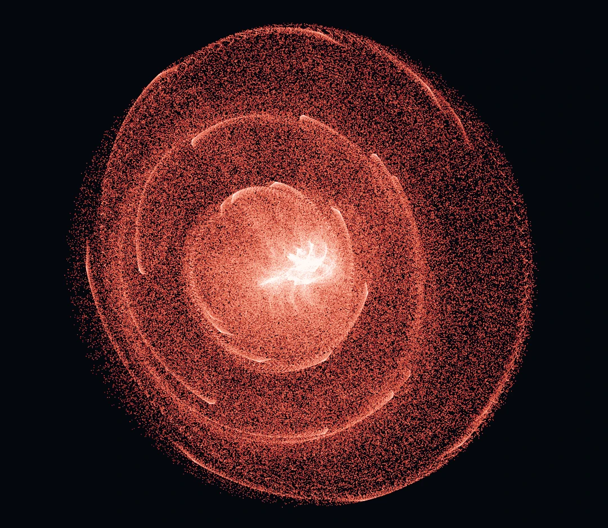

An attractor is a pattern that repeated updates draw a system toward. Each plate combines 40,000 iterations at each of 16 phases. The orbit view projects all 640,000 visits at the selected angle.
Every shape in this gallery comes from a short formula. Start with one point, apply the formula, and feed the result back into it. The bright threads mark places the orbit returns to most often.
The discovery run evaluated formulas. The atlas brings together the reference orbit and 243 discoveries from different cells in the search grid.